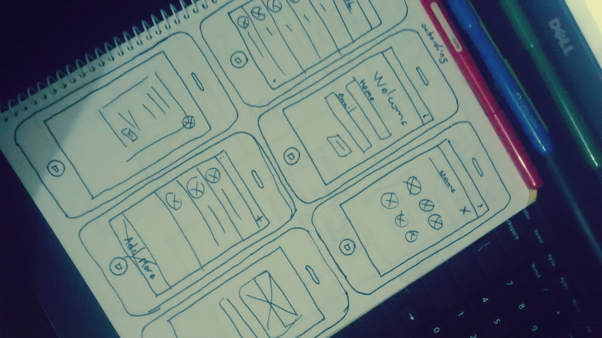
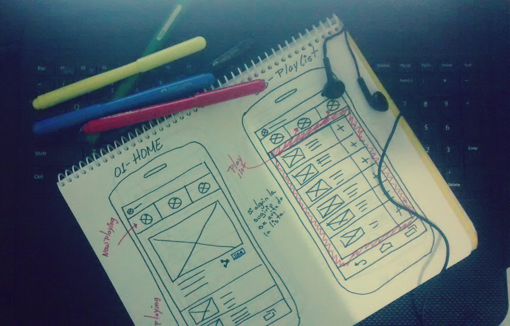
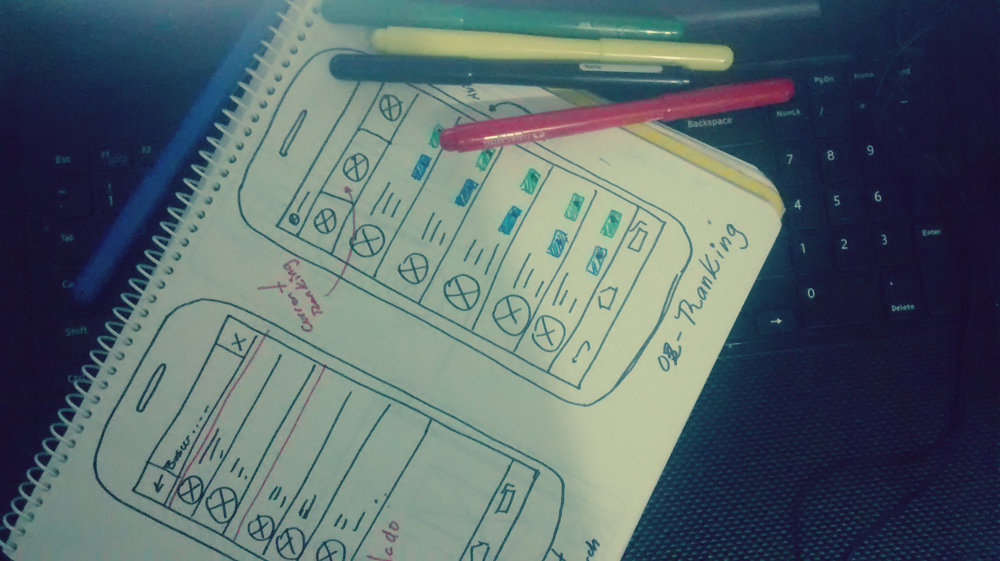
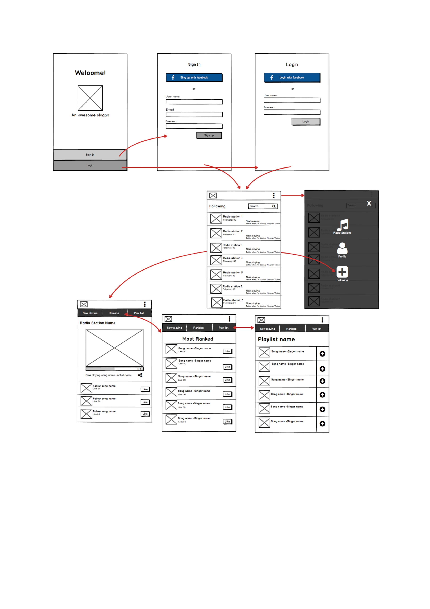

Alice Perez
Mobile music app (i can't tell you the name)
Es una aplicación que le permite a los usuarios votar por sus canciones favoritas que se encuentren en un playlist sugerida por un administrador.
La aplicación está orientada a las emisoras quienes a su vez pueden agregar a los diferentes programas o DJs que trabajan en la emisora. Cada Dj ya tiene una lista de canciones que van a corde con el estilo de su programa y el gusto de su público. La aplicación a través de un panel administrador (web) permitirá subir ese mismo playlist para que el público pueda votar por su favorita.
EL PROCESO
  
ASI FUNCIONA
Todos los usuarios deben crearse una cuenta en la aplicación una vez estén dentro le aparecerá una lista de todas las emisoras que sigue y qué canción está sonando en ese momento , en caso de ser un usuario nuevo entonces la aplicación le recomienda emisoras cerca de su ubicación. Una vez se elige la emisora que se quiere escuchar, el usuario puede ver la cancion que esta sonando y cuales según los votos sonará después además podrá compartir en sus redes sociales los que está escuchando.
En el tab superior Ranking se puede ver como van las votaciones y también votar por su canción favorita en el tab playlist está el playlist sugerido por el administrador, cada canción se puede agregar al ranking para que los demás voten por ella, cuando un usuario elige una canción esta se borra del playlist para que nadie más la vuelva a sugerir.

STILL WORKING....